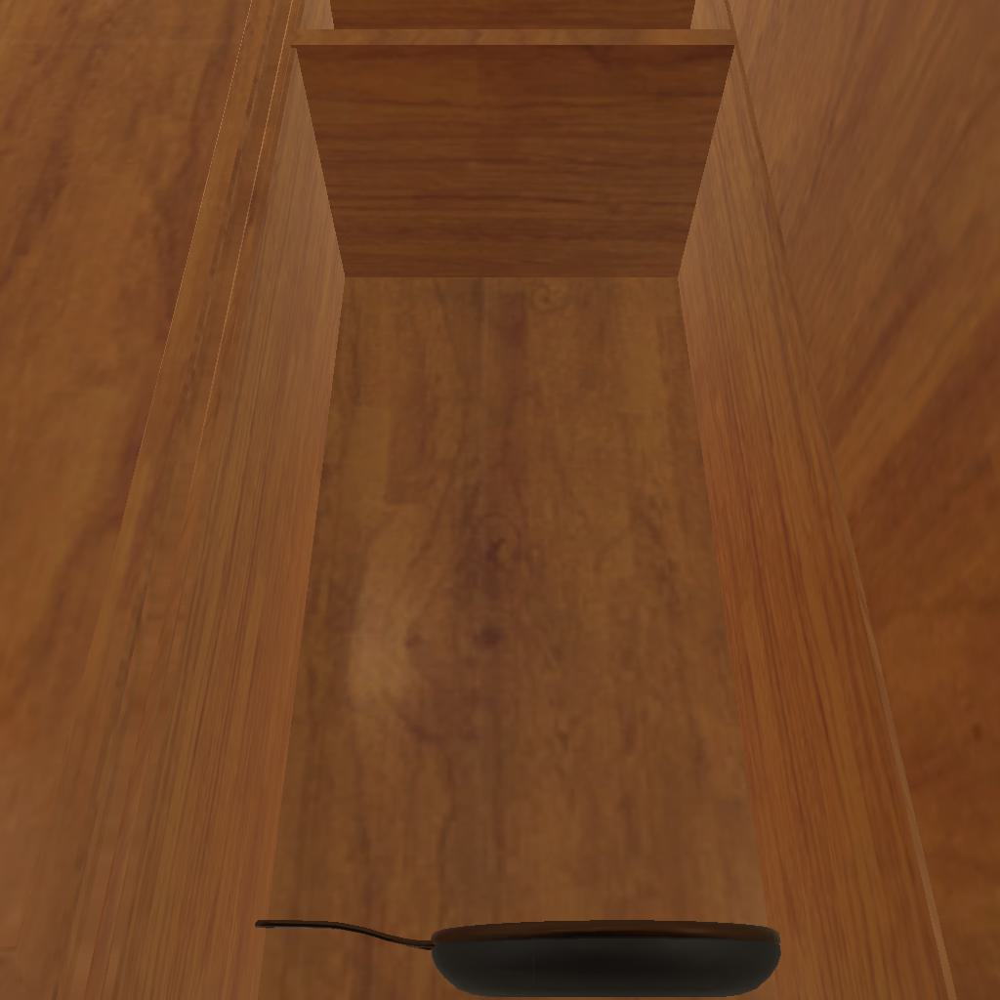
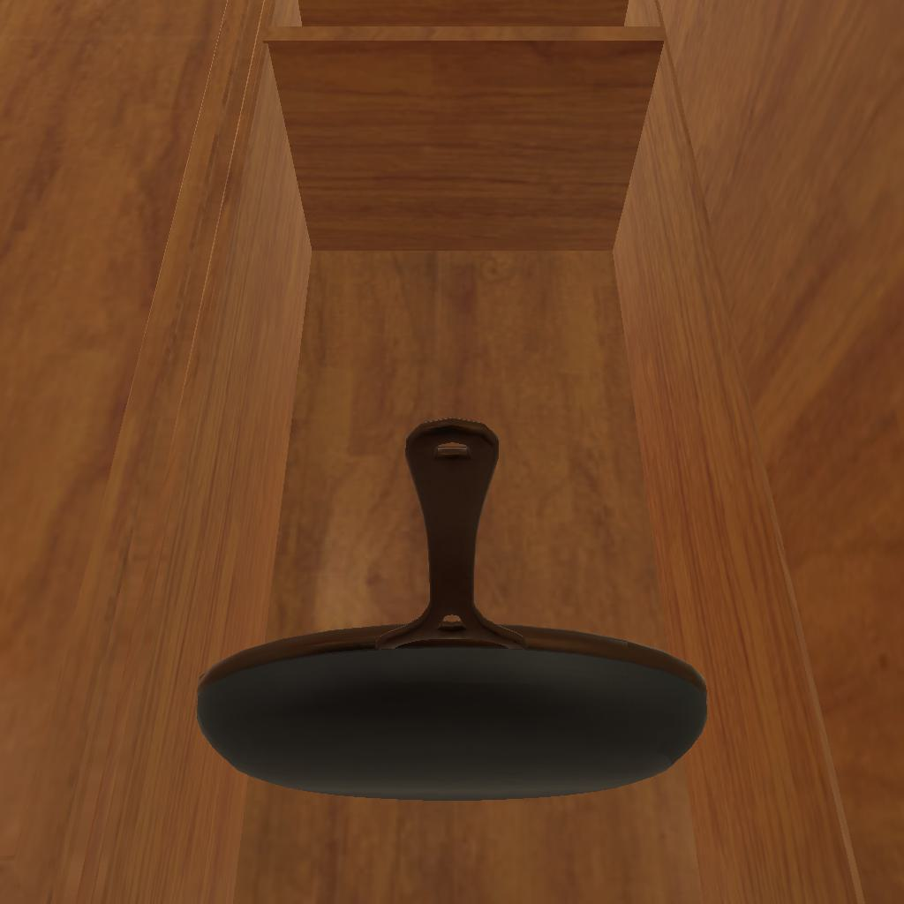

---------------------------------------------------------task: 17---------------------------------------------------------
--------------------------------------------------------------------------------------------------------------------------------------------------------------------
--------------------------------------------------------------------------------------------------------------------------------------------------------------------
Step:--------------------------------------------------------------------------13-------------------------------------------------------------------------------
----------------------------------------
VLM Prompt:
Image1:
Image2:
Image3:
**Instruction**
1. Analyze the provided images to identify all visible household objects and compare the difference between images (e.h. whether the object is opened or not and taken on hand or not), focusing on those relevant to the task description "put a cool pan in stoveburner."
2. Use the analysis of images and the task hint "The agent must find an object of the desired type, pick it up, go to a fridge, cool the object with the fridge, then find the correct location to place it, and put it down there. The agent does not need to use the fridge button or open the fridge to cool the object, and the agent just needs to do action that is "cool the object with the fridge"." to answer the question: what is the most reasonable action in the choices for the task description "put a cool pan in stoveburner"?
3. Decide and write the answer using the template: The answer is: (i): , where i is the real number. If there is no desired object in images, search every place based on **Initial Observation** to find the object. And if no one is exactly correct, choose a similar answer.
**Initial Observation**
You are in the middle of a room. Looking quickly around you, you can see cabinet (1-14), countertop (1-2), microwave (1), drawer (1-5), sink (1), sinkbasin (1), coffeemachine (1), stoveburner (1-4), toaster (1), fridge (1), diningtable (1), garbagecan (1), safe (1)
**Answer Choices**
(1): go to cabinet 1
(2): go to cabinet 3
(3): go to countertop 1
(4): go to cabinet 4
(5): go to cabinet 5
(6): go to microwave 1
(7): go to cabinet 6
(8): go to drawer 1
(9): go to drawer 2
(10): go to drawer 3
(11): go to cabinet 7
(12): go to cabinet 8
(13): go to sink 1
(14): go to sinkbasin 1
(15): go to coffeemachine 1
(16): go to cabinet 9
(17): go to cabinet 10
(18): go to drawer 4
(19): go to cabinet 11
(20): go to stoveburner 1
(21): go to stoveburner 2
(22): go to stoveburner 3
(23): go to stoveburner 4
(24): go to cabinet 12
(25): go to toaster 1
(26): go to drawer 5
(27): go to countertop 2
(28): go to fridge 1
(29): go to cabinet 13
(30): go to cabinet 14
(31): go to diningtable 1
(32): go to garbagecan 1
(33): go to safe 1
(34): close cabinet 2
(35): put pan 1 in/on cabinet 2
(36): examine pan 1
(37): examine cabinet 2
**Answer**
Let's think step by step by following the instructions.
----------------------------------------
----------------------------------------
Original Response:
Image Analysis:
- Image 1 shows a closed cabinet.
- Image 2 shows the same cabinet now open with a pan inside.
- Image 3 shows the pan taken out of the cabinet and held in the air, indicating that it has been picked up.
Task Analysis:
According to the task description "put a cool pan in stoveburner" and the hint provided, the agent must first find a pan, cool it with the fridge without needing to open the fridge or use any buttons, and then place it on a stove burner.
From the Initial Observation, we can see there is one pan in cabinet 2, and there are four stove burners available.
Given the images and the task, the most reasonable action would be to:
- Take the pan from cabinet 2 (which we have seen in the images).
- Cool the pan with the fridge.
- Put the cool pan on one of the stove burners.
From the Answer Choices, the action that matches the task description and hint most closely after the pan has been taken from cabinet 2 would be to go to a stoveburner.
The answer is: (20): go to stoveburner 1
----------------------------------------
----------------------------------------
>>> Refine Original VLM Response and Get Pure Action: go to stoveburner 1
----------------------------------------
-----------------------------------------------------------------
Running time: 13.277933359146118 seconds
Total Money: 10.336010000000002
-----------------------------------------------------------------
-----------------------------------------------------------------
Text Observation:You arrive at loc 20. On the stoveburner 1, you see a pan 2, a soapbottle 1, a stoveknob 1, and a egg 1.
-----------------------------------------------------------------
UNSUCCEED